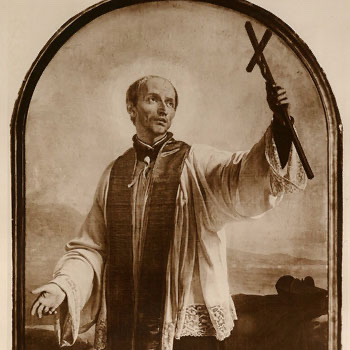

Misionari, pastiri i mistici (Pojedinačna proglašenja)
Svećenik
Sv. Franjo Jeronimski
1642. – 1716.
Pučki misionar napuljske ulice pretvorio je u prostor propovijedanja i susreta. Obilazio je bolesnike, zatvorenike i ljude na društvenom rubu, povezujući navještaj evanđelja s nastojanjem da im vrati nadu i dostojanstvo.

Izvor slike
- Spomendan
- 2. srpnja
- Zaštitništvo
- Grottaglie · Napulj
- Životni vijek
- 1642. – 1716.
- Djelovanje
- Misije i evangelizacija · Siromašni i isključeni · Bolesnici i umirući
- Razdoblje
- 17., 18. stoljeće
- Rođenje — dostupni podaci
- 1642.; dan i mjesec nisu potvrđeni u provjerenom osobnom životopisu.
- Mjesto rođenja
- Grottaglie kod Taranta, Italija
- Datum smrti
- 11.05.1716.
- Mjesto smrti/mučeništva
- Napulj, Italija
- Okolnosti smrti/mučeništva
- Umro od upale poplućnice nakon dvomjesečne bolesti.
- Uloga
- Svećenik
- Mučenik
- Ne
- Ostale oznake
- Apostol Napulja; pučki misionar i propovjednik
- Pripadnost
- Isusovac
- Drugi oblici imena
- Franjo de Geronimo · Francis Jerome · Francis · Francesco de Geronimo · Francis de Geronimo
Životopis
Današnji sveti zaštitnik je Franjo (Francesco) De Geronimo, isusovac, misionar i socijalni obnovitelj. Rodio se 17. prosinca 1642. u talijanskom gradu Grottaglie (provincija Taranto, Apulija), u građanskoj obitelji, kao prvo od jedanaestero djece. Odrastao je u obiteljskom okrilju duboke vjere i kršćanske pobožnosti i već se kao dječak opredijelio za svećeničko zvanje. Studirao je filozofiju na isusovačkom kolegiju u Tarantu, a crkveno pravo i teologiju u Napulju. Zaređen 1666, stupio je 1670. u Družbu Isusovu. Djelovao je kao pučki misionar u gradovima i selima južne Italije. Veliki apostol i socijalni reformator, želio je poći kao misionar na Daleki Istok, ali je od 1676. stalno boravio u Napulju, u kojem je kao pučki apostol djelovao 40 godina. Zavolio je taj grad ljubavlju svoga učitelja Isusa Krista, „prijatelja carinika, grešnika i bludnica“. Njegov duhovnički rad odvijao se po uskim ulicama, sumnjivim predgrađima, zloglasnim četvrtima i živopisnim napuljskim trgovima.
Pokazao je izvanredne sposobnosti kao organizator velike misionarske ekipe, u kojoj su djelovali i laici. Dopirao je i do onih na dnu društva, ljudske i moralne bijede, posvuda je širio tople riječi vjere i ljubavi, a njegove potresne propovijedi obratile su mnoga tvrdokorna srca. Posjećivao je bolesnike i siromahe, propovijedao po zatvorima i javnim kućama, spašavao djecu od zla puta. Pripisuju mu se mnoga čudesa i ozdravljenja. Preminuo je na današnji dan, 11. svibnja 1716, u Napulju. Još za života smatran je svecem, a u nedjelju poslije njegove smrti u isusovačkoj crkvi, gdje je pokopan, primilo je svetu pričest više od 40 tisuća ljudi. Blaženim ga je 1806. proglasio papa Pio VII, a svetim 1839. papa Grgur XVI. Zaštitnik je rodnog grada, Napulja te mnogih naselja, župa i crkava diljem Italije i svijeta.
Pročitaj više na izvornoj stranici ↗